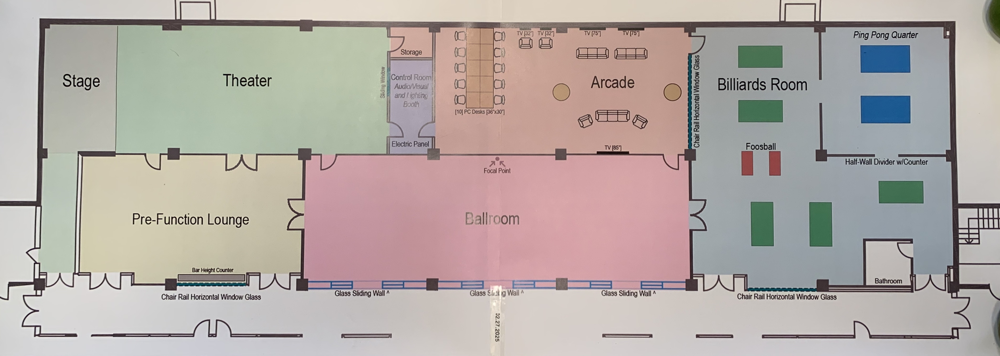
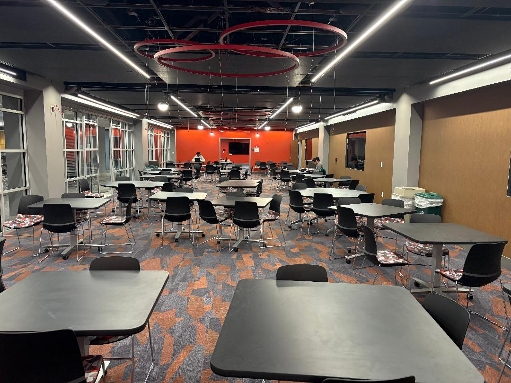

RPI Class of 1979 50th Reunion Gift: The Rathskeller Events Center Fund
A dedicated fund for our 50th Reunion Class Gift.
In support of the "Rathskeller Event Center" (where the bowling alleys were 50 years ago), multi-function technology-enhanced spaces including:
--Theatre and Stage
--Ballroom
--Pre-Function Lounge
Our Reunion Gift Fund will provide screens and supporting technology, and serve as a quasi-endowment for updating and improving this equipment in the future, enhancing the quality of student life
The Rathskeller Event Center will be used by students, clubs, fraternities, sororities, alumni and others, keeping the Rensselaer Union as the center of student life at RPI.
As we begin the planning for our 50th reunion in Fall 2029, we want to jump start our engagement with our class gift fund that will cover the installation of leading edge technology into a renovated space at the Student Union, as well as the ongoing support for both the continuous enhancement of this technology and the programming in the renovated spaces.
Included among the current projects for the renovation of the Student Union are the creation of several rooms on the ground floor: a "ballroom", a pre-function lounge and theatre (the Rathskeller Events Center), and the installation of digital screens -- backed by a leading edge technology system such as those used in entertainment and meeting venues -- in all rooms at the Rathskeller Events Center.
The budget for the digital screens and technology system is estimated to be $250,000 -- the initial fundraising goal for our class gift fund. If we raise more than this amount prior to 2029, we will explore other needs associated with the Rathskeller Events Center and programming scheduled for its theatre. Even after Reunion 2029, we can continue this class gift fund as a sustainable source of funding for continuous enhancement of the technology system as well as ongoing programming, as part of our commitment to improving student life.
Please join us in supporting the 50th reunion gift to RPI by making a multi-year pledge as an inaugural donor to The RPI Class of 1979 Rathskeller Events Center Fund.
You can read about the 50th Reunion Gift Fund and donate to the fund at the RPI RU Impact website: https://giving.rpi.edu/ru-impact/ and the Class of 1979 Rath Event Fund donation link. .
Thanks to all who donate to the gift fund and we hope to see all classmates at the 50th Reunion in 2029. (Yes, we are planning ahead like no class ever has before!)
Class of 1979 Rathskeller Events Center Fund
RU Impact - Class of 1979 Gift Fund
Floor plan of what used to be the Games Area and Bowling Alley:


RETURN TO CLASS OF 1979 HOME PAGE
RETURN TO Rensselaer Alumni Home Page